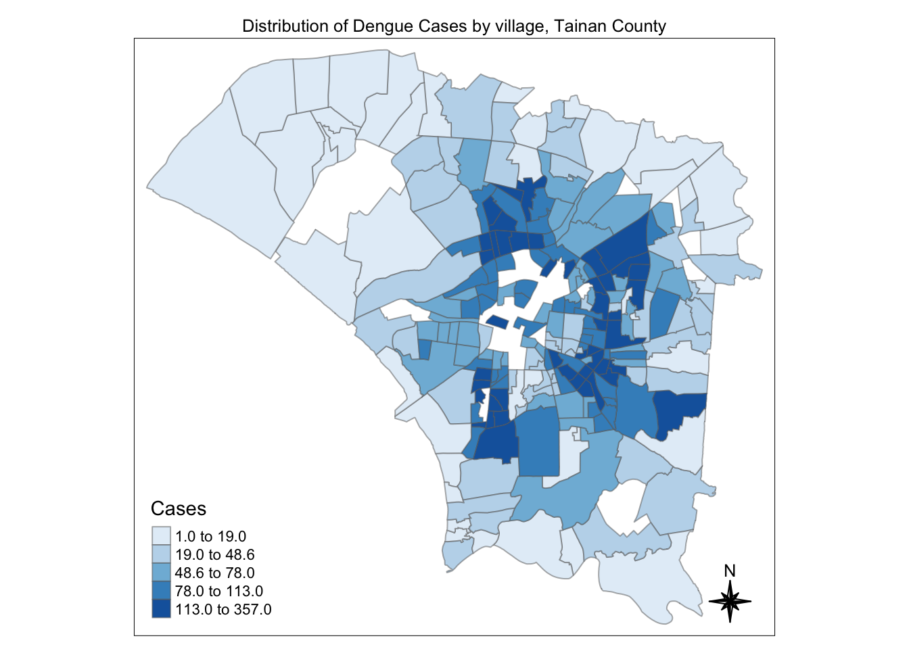
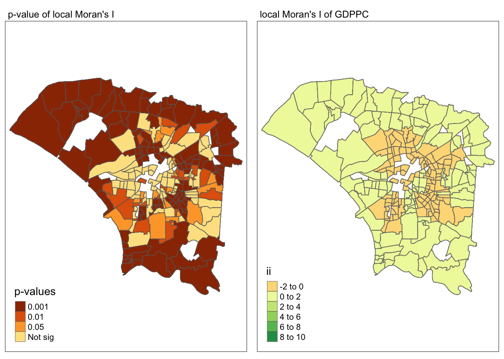
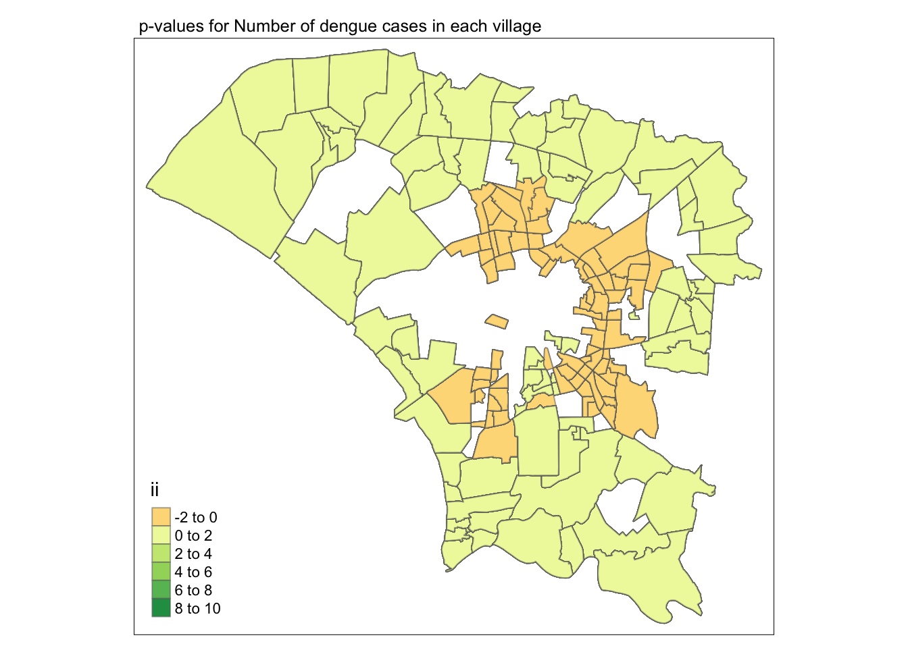

Take-home Exercise 2: Application of Spatial and Spatio-temporal Analysis Methods to Discover the Distribution of Dengue Fever in Tainan City, Taiwan - Report and Analysis
Load data in RDS format
Global Spatial Autocorrelation Analysis
This exercise expected the sfdep methods taught in In-class Exercise 5: Global and Local Measures of Spatial Autocorrelation and In-class Exercise 7: Emerging Hot Spot Analysis to derive the various statistic values and explain them.
Derive contiguity weights with Queen’s method
left_join to combine the datasets
Show the code
Simple feature collection with 4500 features and 12 fields
Geometry type: POLYGON
Dimension: XY
Bounding box: xmin: 120.0627 ymin: 22.89401 xmax: 120.2925 ymax: 23.09144
Geodetic CRS: TWD97
First 10 features:
VILLCODE COUNTYNAME TOWNNAME VILLNAME VILLENG COUNTYID
1 67000350032 臺南市 安南區 安南區_青草里 Qingcao Vil. D
2 67000350032 臺南市 安南區 安南區_青草里 Qingcao Vil. D
3 67000350032 臺南市 安南區 安南區_青草里 Qingcao Vil. D
4 67000350032 臺南市 安南區 安南區_青草里 Qingcao Vil. D
5 67000350032 臺南市 安南區 安南區_青草里 Qingcao Vil. D
6 67000350032 臺南市 安南區 安南區_青草里 Qingcao Vil. D
7 67000350032 臺南市 安南區 安南區_青草里 Qingcao Vil. D
8 67000350032 臺南市 安南區 安南區_青草里 Qingcao Vil. D
9 67000350032 臺南市 安南區 安南區_青草里 Qingcao Vil. D
10 67000350032 臺南市 安南區 安南區_青草里 Qingcao Vil. D
COUNTYCODE TOWNID TOWNCODE NOTE week num_dengue_cases
1 67000 D06 67000350 <NA> 37 1
2 67000 D06 67000350 <NA> 41 1
3 67000 D06 67000350 <NA> 31 0
4 67000 D06 67000350 <NA> 32 0
5 67000 D06 67000350 <NA> 33 0
6 67000 D06 67000350 <NA> 34 0
7 67000 D06 67000350 <NA> 35 0
8 67000 D06 67000350 <NA> 36 0
9 67000 D06 67000350 <NA> 38 0
10 67000 D06 67000350 <NA> 39 0
geometry
1 POLYGON ((120.1176 23.08387...
2 POLYGON ((120.1176 23.08387...
3 POLYGON ((120.1176 23.08387...
4 POLYGON ((120.1176 23.08387...
5 POLYGON ((120.1176 23.08387...
6 POLYGON ((120.1176 23.08387...
7 POLYGON ((120.1176 23.08387...
8 POLYGON ((120.1176 23.08387...
9 POLYGON ((120.1176 23.08387...
10 POLYGON ((120.1176 23.08387...This would be how the distribution of the dengue dataset
tmap mode set to plottingShow the code
tm_shape(tainan_dengue_sf %>%
group_by(VILLNAME) %>%
summarise(cases = sum(num_dengue_cases))) +
tm_fill("cases",
style = "quantile",
palette = "Blues",
title = "Cases") +
tm_layout(main.title = "Distribution of Dengue Cases by village, Tainan County",
main.title.position = "center",
main.title.size = 0.8,
legend.height = 0.45,
legend.width = 0.35,
frame = TRUE) +
tm_borders(alpha = 0.5) +
tm_compass(type="8star", size = 2)
Get neighbour list
mutatecreate thenbandwtcolumns
Show the code
Simple feature collection with 4500 features and 14 fields
Geometry type: POLYGON
Dimension: XY
Bounding box: xmin: 120.0627 ymin: 22.89401 xmax: 120.2925 ymax: 23.09144
Geodetic CRS: TWD97
First 10 features:
nb
1 2, 3, 4, 5, 6, 7, 8, 9, 10, 11, 12, 13, 14, 15, 16, 17, 18, 19, 20, 101, 102, 103, 104, 105, 106, 107, 108, 109, 110, 111, 112, 113, 114, 115, 116, 117, 118, 119, 120, 2341, 2342, 2343, 2344, 2345, 2346, 2347, 2348, 2349, 2350, 2351, 2352, 2353, 2354, 2355, 2356, 2357, 2358, 2359, 2360, 3181, 3182, 3183, 3184, 3185, 3186, 3187, 3188, 3189, 3190, 3191, 3192, 3193, 3194, 3195, 3196, 3197, 3198, 3199, 3200
2 1, 3, 4, 5, 6, 7, 8, 9, 10, 11, 12, 13, 14, 15, 16, 17, 18, 19, 20, 101, 102, 103, 104, 105, 106, 107, 108, 109, 110, 111, 112, 113, 114, 115, 116, 117, 118, 119, 120, 2341, 2342, 2343, 2344, 2345, 2346, 2347, 2348, 2349, 2350, 2351, 2352, 2353, 2354, 2355, 2356, 2357, 2358, 2359, 2360, 3181, 3182, 3183, 3184, 3185, 3186, 3187, 3188, 3189, 3190, 3191, 3192, 3193, 3194, 3195, 3196, 3197, 3198, 3199, 3200
3 1, 2, 4, 5, 6, 7, 8, 9, 10, 11, 12, 13, 14, 15, 16, 17, 18, 19, 20, 101, 102, 103, 104, 105, 106, 107, 108, 109, 110, 111, 112, 113, 114, 115, 116, 117, 118, 119, 120, 2341, 2342, 2343, 2344, 2345, 2346, 2347, 2348, 2349, 2350, 2351, 2352, 2353, 2354, 2355, 2356, 2357, 2358, 2359, 2360, 3181, 3182, 3183, 3184, 3185, 3186, 3187, 3188, 3189, 3190, 3191, 3192, 3193, 3194, 3195, 3196, 3197, 3198, 3199, 3200
4 1, 2, 3, 5, 6, 7, 8, 9, 10, 11, 12, 13, 14, 15, 16, 17, 18, 19, 20, 101, 102, 103, 104, 105, 106, 107, 108, 109, 110, 111, 112, 113, 114, 115, 116, 117, 118, 119, 120, 2341, 2342, 2343, 2344, 2345, 2346, 2347, 2348, 2349, 2350, 2351, 2352, 2353, 2354, 2355, 2356, 2357, 2358, 2359, 2360, 3181, 3182, 3183, 3184, 3185, 3186, 3187, 3188, 3189, 3190, 3191, 3192, 3193, 3194, 3195, 3196, 3197, 3198, 3199, 3200
5 1, 2, 3, 4, 6, 7, 8, 9, 10, 11, 12, 13, 14, 15, 16, 17, 18, 19, 20, 101, 102, 103, 104, 105, 106, 107, 108, 109, 110, 111, 112, 113, 114, 115, 116, 117, 118, 119, 120, 2341, 2342, 2343, 2344, 2345, 2346, 2347, 2348, 2349, 2350, 2351, 2352, 2353, 2354, 2355, 2356, 2357, 2358, 2359, 2360, 3181, 3182, 3183, 3184, 3185, 3186, 3187, 3188, 3189, 3190, 3191, 3192, 3193, 3194, 3195, 3196, 3197, 3198, 3199, 3200
6 1, 2, 3, 4, 5, 7, 8, 9, 10, 11, 12, 13, 14, 15, 16, 17, 18, 19, 20, 101, 102, 103, 104, 105, 106, 107, 108, 109, 110, 111, 112, 113, 114, 115, 116, 117, 118, 119, 120, 2341, 2342, 2343, 2344, 2345, 2346, 2347, 2348, 2349, 2350, 2351, 2352, 2353, 2354, 2355, 2356, 2357, 2358, 2359, 2360, 3181, 3182, 3183, 3184, 3185, 3186, 3187, 3188, 3189, 3190, 3191, 3192, 3193, 3194, 3195, 3196, 3197, 3198, 3199, 3200
7 1, 2, 3, 4, 5, 6, 8, 9, 10, 11, 12, 13, 14, 15, 16, 17, 18, 19, 20, 101, 102, 103, 104, 105, 106, 107, 108, 109, 110, 111, 112, 113, 114, 115, 116, 117, 118, 119, 120, 2341, 2342, 2343, 2344, 2345, 2346, 2347, 2348, 2349, 2350, 2351, 2352, 2353, 2354, 2355, 2356, 2357, 2358, 2359, 2360, 3181, 3182, 3183, 3184, 3185, 3186, 3187, 3188, 3189, 3190, 3191, 3192, 3193, 3194, 3195, 3196, 3197, 3198, 3199, 3200
8 1, 2, 3, 4, 5, 6, 7, 9, 10, 11, 12, 13, 14, 15, 16, 17, 18, 19, 20, 101, 102, 103, 104, 105, 106, 107, 108, 109, 110, 111, 112, 113, 114, 115, 116, 117, 118, 119, 120, 2341, 2342, 2343, 2344, 2345, 2346, 2347, 2348, 2349, 2350, 2351, 2352, 2353, 2354, 2355, 2356, 2357, 2358, 2359, 2360, 3181, 3182, 3183, 3184, 3185, 3186, 3187, 3188, 3189, 3190, 3191, 3192, 3193, 3194, 3195, 3196, 3197, 3198, 3199, 3200
9 1, 2, 3, 4, 5, 6, 7, 8, 10, 11, 12, 13, 14, 15, 16, 17, 18, 19, 20, 101, 102, 103, 104, 105, 106, 107, 108, 109, 110, 111, 112, 113, 114, 115, 116, 117, 118, 119, 120, 2341, 2342, 2343, 2344, 2345, 2346, 2347, 2348, 2349, 2350, 2351, 2352, 2353, 2354, 2355, 2356, 2357, 2358, 2359, 2360, 3181, 3182, 3183, 3184, 3185, 3186, 3187, 3188, 3189, 3190, 3191, 3192, 3193, 3194, 3195, 3196, 3197, 3198, 3199, 3200
10 1, 2, 3, 4, 5, 6, 7, 8, 9, 11, 12, 13, 14, 15, 16, 17, 18, 19, 20, 101, 102, 103, 104, 105, 106, 107, 108, 109, 110, 111, 112, 113, 114, 115, 116, 117, 118, 119, 120, 2341, 2342, 2343, 2344, 2345, 2346, 2347, 2348, 2349, 2350, 2351, 2352, 2353, 2354, 2355, 2356, 2357, 2358, 2359, 2360, 3181, 3182, 3183, 3184, 3185, 3186, 3187, 3188, 3189, 3190, 3191, 3192, 3193, 3194, 3195, 3196, 3197, 3198, 3199, 3200
wt
1 0.01265823, 0.01265823, 0.01265823, 0.01265823, 0.01265823, 0.01265823, 0.01265823, 0.01265823, 0.01265823, 0.01265823, 0.01265823, 0.01265823, 0.01265823, 0.01265823, 0.01265823, 0.01265823, 0.01265823, 0.01265823, 0.01265823, 0.01265823, 0.01265823, 0.01265823, 0.01265823, 0.01265823, 0.01265823, 0.01265823, 0.01265823, 0.01265823, 0.01265823, 0.01265823, 0.01265823, 0.01265823, 0.01265823, 0.01265823, 0.01265823, 0.01265823, 0.01265823, 0.01265823, 0.01265823, 0.01265823, 0.01265823, 0.01265823, 0.01265823, 0.01265823, 0.01265823, 0.01265823, 0.01265823, 0.01265823, 0.01265823, 0.01265823, 0.01265823, 0.01265823, 0.01265823, 0.01265823, 0.01265823, 0.01265823, 0.01265823, 0.01265823, 0.01265823, 0.01265823, 0.01265823, 0.01265823, 0.01265823, 0.01265823, 0.01265823, 0.01265823, 0.01265823, 0.01265823, 0.01265823, 0.01265823, 0.01265823, 0.01265823, 0.01265823, 0.01265823, 0.01265823, 0.01265823, 0.01265823, 0.01265823, 0.01265823
2 0.01265823, 0.01265823, 0.01265823, 0.01265823, 0.01265823, 0.01265823, 0.01265823, 0.01265823, 0.01265823, 0.01265823, 0.01265823, 0.01265823, 0.01265823, 0.01265823, 0.01265823, 0.01265823, 0.01265823, 0.01265823, 0.01265823, 0.01265823, 0.01265823, 0.01265823, 0.01265823, 0.01265823, 0.01265823, 0.01265823, 0.01265823, 0.01265823, 0.01265823, 0.01265823, 0.01265823, 0.01265823, 0.01265823, 0.01265823, 0.01265823, 0.01265823, 0.01265823, 0.01265823, 0.01265823, 0.01265823, 0.01265823, 0.01265823, 0.01265823, 0.01265823, 0.01265823, 0.01265823, 0.01265823, 0.01265823, 0.01265823, 0.01265823, 0.01265823, 0.01265823, 0.01265823, 0.01265823, 0.01265823, 0.01265823, 0.01265823, 0.01265823, 0.01265823, 0.01265823, 0.01265823, 0.01265823, 0.01265823, 0.01265823, 0.01265823, 0.01265823, 0.01265823, 0.01265823, 0.01265823, 0.01265823, 0.01265823, 0.01265823, 0.01265823, 0.01265823, 0.01265823, 0.01265823, 0.01265823, 0.01265823, 0.01265823
3 0.01265823, 0.01265823, 0.01265823, 0.01265823, 0.01265823, 0.01265823, 0.01265823, 0.01265823, 0.01265823, 0.01265823, 0.01265823, 0.01265823, 0.01265823, 0.01265823, 0.01265823, 0.01265823, 0.01265823, 0.01265823, 0.01265823, 0.01265823, 0.01265823, 0.01265823, 0.01265823, 0.01265823, 0.01265823, 0.01265823, 0.01265823, 0.01265823, 0.01265823, 0.01265823, 0.01265823, 0.01265823, 0.01265823, 0.01265823, 0.01265823, 0.01265823, 0.01265823, 0.01265823, 0.01265823, 0.01265823, 0.01265823, 0.01265823, 0.01265823, 0.01265823, 0.01265823, 0.01265823, 0.01265823, 0.01265823, 0.01265823, 0.01265823, 0.01265823, 0.01265823, 0.01265823, 0.01265823, 0.01265823, 0.01265823, 0.01265823, 0.01265823, 0.01265823, 0.01265823, 0.01265823, 0.01265823, 0.01265823, 0.01265823, 0.01265823, 0.01265823, 0.01265823, 0.01265823, 0.01265823, 0.01265823, 0.01265823, 0.01265823, 0.01265823, 0.01265823, 0.01265823, 0.01265823, 0.01265823, 0.01265823, 0.01265823
4 0.01265823, 0.01265823, 0.01265823, 0.01265823, 0.01265823, 0.01265823, 0.01265823, 0.01265823, 0.01265823, 0.01265823, 0.01265823, 0.01265823, 0.01265823, 0.01265823, 0.01265823, 0.01265823, 0.01265823, 0.01265823, 0.01265823, 0.01265823, 0.01265823, 0.01265823, 0.01265823, 0.01265823, 0.01265823, 0.01265823, 0.01265823, 0.01265823, 0.01265823, 0.01265823, 0.01265823, 0.01265823, 0.01265823, 0.01265823, 0.01265823, 0.01265823, 0.01265823, 0.01265823, 0.01265823, 0.01265823, 0.01265823, 0.01265823, 0.01265823, 0.01265823, 0.01265823, 0.01265823, 0.01265823, 0.01265823, 0.01265823, 0.01265823, 0.01265823, 0.01265823, 0.01265823, 0.01265823, 0.01265823, 0.01265823, 0.01265823, 0.01265823, 0.01265823, 0.01265823, 0.01265823, 0.01265823, 0.01265823, 0.01265823, 0.01265823, 0.01265823, 0.01265823, 0.01265823, 0.01265823, 0.01265823, 0.01265823, 0.01265823, 0.01265823, 0.01265823, 0.01265823, 0.01265823, 0.01265823, 0.01265823, 0.01265823
5 0.01265823, 0.01265823, 0.01265823, 0.01265823, 0.01265823, 0.01265823, 0.01265823, 0.01265823, 0.01265823, 0.01265823, 0.01265823, 0.01265823, 0.01265823, 0.01265823, 0.01265823, 0.01265823, 0.01265823, 0.01265823, 0.01265823, 0.01265823, 0.01265823, 0.01265823, 0.01265823, 0.01265823, 0.01265823, 0.01265823, 0.01265823, 0.01265823, 0.01265823, 0.01265823, 0.01265823, 0.01265823, 0.01265823, 0.01265823, 0.01265823, 0.01265823, 0.01265823, 0.01265823, 0.01265823, 0.01265823, 0.01265823, 0.01265823, 0.01265823, 0.01265823, 0.01265823, 0.01265823, 0.01265823, 0.01265823, 0.01265823, 0.01265823, 0.01265823, 0.01265823, 0.01265823, 0.01265823, 0.01265823, 0.01265823, 0.01265823, 0.01265823, 0.01265823, 0.01265823, 0.01265823, 0.01265823, 0.01265823, 0.01265823, 0.01265823, 0.01265823, 0.01265823, 0.01265823, 0.01265823, 0.01265823, 0.01265823, 0.01265823, 0.01265823, 0.01265823, 0.01265823, 0.01265823, 0.01265823, 0.01265823, 0.01265823
6 0.01265823, 0.01265823, 0.01265823, 0.01265823, 0.01265823, 0.01265823, 0.01265823, 0.01265823, 0.01265823, 0.01265823, 0.01265823, 0.01265823, 0.01265823, 0.01265823, 0.01265823, 0.01265823, 0.01265823, 0.01265823, 0.01265823, 0.01265823, 0.01265823, 0.01265823, 0.01265823, 0.01265823, 0.01265823, 0.01265823, 0.01265823, 0.01265823, 0.01265823, 0.01265823, 0.01265823, 0.01265823, 0.01265823, 0.01265823, 0.01265823, 0.01265823, 0.01265823, 0.01265823, 0.01265823, 0.01265823, 0.01265823, 0.01265823, 0.01265823, 0.01265823, 0.01265823, 0.01265823, 0.01265823, 0.01265823, 0.01265823, 0.01265823, 0.01265823, 0.01265823, 0.01265823, 0.01265823, 0.01265823, 0.01265823, 0.01265823, 0.01265823, 0.01265823, 0.01265823, 0.01265823, 0.01265823, 0.01265823, 0.01265823, 0.01265823, 0.01265823, 0.01265823, 0.01265823, 0.01265823, 0.01265823, 0.01265823, 0.01265823, 0.01265823, 0.01265823, 0.01265823, 0.01265823, 0.01265823, 0.01265823, 0.01265823
7 0.01265823, 0.01265823, 0.01265823, 0.01265823, 0.01265823, 0.01265823, 0.01265823, 0.01265823, 0.01265823, 0.01265823, 0.01265823, 0.01265823, 0.01265823, 0.01265823, 0.01265823, 0.01265823, 0.01265823, 0.01265823, 0.01265823, 0.01265823, 0.01265823, 0.01265823, 0.01265823, 0.01265823, 0.01265823, 0.01265823, 0.01265823, 0.01265823, 0.01265823, 0.01265823, 0.01265823, 0.01265823, 0.01265823, 0.01265823, 0.01265823, 0.01265823, 0.01265823, 0.01265823, 0.01265823, 0.01265823, 0.01265823, 0.01265823, 0.01265823, 0.01265823, 0.01265823, 0.01265823, 0.01265823, 0.01265823, 0.01265823, 0.01265823, 0.01265823, 0.01265823, 0.01265823, 0.01265823, 0.01265823, 0.01265823, 0.01265823, 0.01265823, 0.01265823, 0.01265823, 0.01265823, 0.01265823, 0.01265823, 0.01265823, 0.01265823, 0.01265823, 0.01265823, 0.01265823, 0.01265823, 0.01265823, 0.01265823, 0.01265823, 0.01265823, 0.01265823, 0.01265823, 0.01265823, 0.01265823, 0.01265823, 0.01265823
8 0.01265823, 0.01265823, 0.01265823, 0.01265823, 0.01265823, 0.01265823, 0.01265823, 0.01265823, 0.01265823, 0.01265823, 0.01265823, 0.01265823, 0.01265823, 0.01265823, 0.01265823, 0.01265823, 0.01265823, 0.01265823, 0.01265823, 0.01265823, 0.01265823, 0.01265823, 0.01265823, 0.01265823, 0.01265823, 0.01265823, 0.01265823, 0.01265823, 0.01265823, 0.01265823, 0.01265823, 0.01265823, 0.01265823, 0.01265823, 0.01265823, 0.01265823, 0.01265823, 0.01265823, 0.01265823, 0.01265823, 0.01265823, 0.01265823, 0.01265823, 0.01265823, 0.01265823, 0.01265823, 0.01265823, 0.01265823, 0.01265823, 0.01265823, 0.01265823, 0.01265823, 0.01265823, 0.01265823, 0.01265823, 0.01265823, 0.01265823, 0.01265823, 0.01265823, 0.01265823, 0.01265823, 0.01265823, 0.01265823, 0.01265823, 0.01265823, 0.01265823, 0.01265823, 0.01265823, 0.01265823, 0.01265823, 0.01265823, 0.01265823, 0.01265823, 0.01265823, 0.01265823, 0.01265823, 0.01265823, 0.01265823, 0.01265823
9 0.01265823, 0.01265823, 0.01265823, 0.01265823, 0.01265823, 0.01265823, 0.01265823, 0.01265823, 0.01265823, 0.01265823, 0.01265823, 0.01265823, 0.01265823, 0.01265823, 0.01265823, 0.01265823, 0.01265823, 0.01265823, 0.01265823, 0.01265823, 0.01265823, 0.01265823, 0.01265823, 0.01265823, 0.01265823, 0.01265823, 0.01265823, 0.01265823, 0.01265823, 0.01265823, 0.01265823, 0.01265823, 0.01265823, 0.01265823, 0.01265823, 0.01265823, 0.01265823, 0.01265823, 0.01265823, 0.01265823, 0.01265823, 0.01265823, 0.01265823, 0.01265823, 0.01265823, 0.01265823, 0.01265823, 0.01265823, 0.01265823, 0.01265823, 0.01265823, 0.01265823, 0.01265823, 0.01265823, 0.01265823, 0.01265823, 0.01265823, 0.01265823, 0.01265823, 0.01265823, 0.01265823, 0.01265823, 0.01265823, 0.01265823, 0.01265823, 0.01265823, 0.01265823, 0.01265823, 0.01265823, 0.01265823, 0.01265823, 0.01265823, 0.01265823, 0.01265823, 0.01265823, 0.01265823, 0.01265823, 0.01265823, 0.01265823
10 0.01265823, 0.01265823, 0.01265823, 0.01265823, 0.01265823, 0.01265823, 0.01265823, 0.01265823, 0.01265823, 0.01265823, 0.01265823, 0.01265823, 0.01265823, 0.01265823, 0.01265823, 0.01265823, 0.01265823, 0.01265823, 0.01265823, 0.01265823, 0.01265823, 0.01265823, 0.01265823, 0.01265823, 0.01265823, 0.01265823, 0.01265823, 0.01265823, 0.01265823, 0.01265823, 0.01265823, 0.01265823, 0.01265823, 0.01265823, 0.01265823, 0.01265823, 0.01265823, 0.01265823, 0.01265823, 0.01265823, 0.01265823, 0.01265823, 0.01265823, 0.01265823, 0.01265823, 0.01265823, 0.01265823, 0.01265823, 0.01265823, 0.01265823, 0.01265823, 0.01265823, 0.01265823, 0.01265823, 0.01265823, 0.01265823, 0.01265823, 0.01265823, 0.01265823, 0.01265823, 0.01265823, 0.01265823, 0.01265823, 0.01265823, 0.01265823, 0.01265823, 0.01265823, 0.01265823, 0.01265823, 0.01265823, 0.01265823, 0.01265823, 0.01265823, 0.01265823, 0.01265823, 0.01265823, 0.01265823, 0.01265823, 0.01265823
VILLCODE COUNTYNAME TOWNNAME VILLNAME VILLENG COUNTYID
1 67000350032 臺南市 安南區 安南區_青草里 Qingcao Vil. D
2 67000350032 臺南市 安南區 安南區_青草里 Qingcao Vil. D
3 67000350032 臺南市 安南區 安南區_青草里 Qingcao Vil. D
4 67000350032 臺南市 安南區 安南區_青草里 Qingcao Vil. D
5 67000350032 臺南市 安南區 安南區_青草里 Qingcao Vil. D
6 67000350032 臺南市 安南區 安南區_青草里 Qingcao Vil. D
7 67000350032 臺南市 安南區 安南區_青草里 Qingcao Vil. D
8 67000350032 臺南市 安南區 安南區_青草里 Qingcao Vil. D
9 67000350032 臺南市 安南區 安南區_青草里 Qingcao Vil. D
10 67000350032 臺南市 安南區 安南區_青草里 Qingcao Vil. D
COUNTYCODE TOWNID TOWNCODE NOTE week num_dengue_cases
1 67000 D06 67000350 <NA> 37 1
2 67000 D06 67000350 <NA> 41 1
3 67000 D06 67000350 <NA> 31 0
4 67000 D06 67000350 <NA> 32 0
5 67000 D06 67000350 <NA> 33 0
6 67000 D06 67000350 <NA> 34 0
7 67000 D06 67000350 <NA> 35 0
8 67000 D06 67000350 <NA> 36 0
9 67000 D06 67000350 <NA> 38 0
10 67000 D06 67000350 <NA> 39 0
geometry
1 POLYGON ((120.1176 23.08387...
2 POLYGON ((120.1176 23.08387...
3 POLYGON ((120.1176 23.08387...
4 POLYGON ((120.1176 23.08387...
5 POLYGON ((120.1176 23.08387...
6 POLYGON ((120.1176 23.08387...
7 POLYGON ((120.1176 23.08387...
8 POLYGON ((120.1176 23.08387...
9 POLYGON ((120.1176 23.08387...
10 POLYGON ((120.1176 23.08387...Get Global Moran I statistics
Show the code
Monte-Carlo simulation of Moran I
data: x
weights: listw
number of simulations + 1: 100
statistic = 0.15585, observed rank = 100, p-value < 2.2e-16
alternative hypothesis: two.sidedThe report above shows that the p-value is less than the alpha value of 0.05. We have sufficient statistical evidence to reject the null hypothesis that spatial distribution of dengue cases is random. Also as the Moran I statistics is greater than 0, the spatial distribution of dengue cases had shown sign of clustering.
Local Spatial Autocorrelation Analysis
Cluster and Outlier Analysis
Get local Moran’s I statistics to
Show the code
Rows: 4,500
Columns: 27
$ ii <dbl> 0.29488831, 0.29488831, 0.40429780, 0.40429780, 0.404…
$ eii <dbl> 5.545713e-03, -3.955986e-03, -1.712331e-03, 2.552024e…
$ var_ii <dbl> 0.0027765888, 0.0031276437, 0.0055156977, 0.006768213…
$ z_ii <dbl> 5.491065, 5.343630, 5.466843, 4.914020, 5.175360, 6.0…
$ p_ii <dbl> 3.995169e-08, 9.110368e-08, 4.581202e-08, 8.922757e-0…
$ p_ii_sim <dbl> 0.01, 0.01, 0.01, 0.01, 0.01, 0.01, 0.01, 0.01, 0.01,…
$ p_folded_sim <dbl> 0.005, 0.005, 0.005, 0.005, 0.005, 0.005, 0.005, 0.00…
$ skewness <dbl> -0.19315267, -0.51281160, -0.26268657, -0.40516291, -…
$ kurtosis <dbl> 0.049194460, 0.330521763, 0.704702906, 0.079090693, 0…
$ mean <fct> Low-Low, Low-Low, Low-Low, Low-Low, Low-Low, Low-Low,…
$ median <fct> Low-Low, Low-Low, Low-Low, Low-Low, Low-Low, Low-Low,…
$ pysal <fct> Low-Low, Low-Low, Low-Low, Low-Low, Low-Low, Low-Low,…
$ nb <nb> <2, 3, 4, 5, 6, 7, 8, 9, 10, 11, 12, 13, 14, 15, 16, 1…
$ wt <list> <0.01265823, 0.01265823, 0.01265823, 0.01265823, 0.0…
$ VILLCODE <chr> "67000350032", "67000350032", "67000350032", "6700035…
$ COUNTYNAME <chr> "臺南市", "臺南市", "臺南市", "臺南市", "臺南市", "臺…
$ TOWNNAME <chr> "安南區", "安南區", "安南區", "安南區", "安南區", "安…
$ VILLNAME <chr> "安南區_青草里", "安南區_青草里", "安南區_青草里", "…
$ VILLENG <chr> "Qingcao Vil.", "Qingcao Vil.", "Qingcao Vil.", "Qing…
$ COUNTYID <chr> "D", "D", "D", "D", "D", "D", "D", "D", "D", "D", "D"…
$ COUNTYCODE <chr> "67000", "67000", "67000", "67000", "67000", "67000",…
$ TOWNID <chr> "D06", "D06", "D06", "D06", "D06", "D06", "D06", "D06…
$ TOWNCODE <chr> "67000350", "67000350", "67000350", "67000350", "6700…
$ NOTE <chr> NA, NA, NA, NA, NA, NA, NA, NA, NA, NA, NA, NA, NA, N…
$ week <dbl> 37, 41, 31, 32, 33, 34, 35, 36, 38, 39, 40, 42, 43, 4…
$ num_dengue_cases <int> 1, 1, 0, 0, 0, 0, 0, 0, 0, 0, 0, 0, 0, 0, 0, 0, 0, 0,…
$ geometry <POLYGON [°]> POLYGON ((120.1176 23.08387..., POLYGON ((120…Look at the local Moran I statistics for each village. The graph supports our interpretation that the data is clustered.
tmap mode set to plottingShow the code
map1 <- tm_shape(lisa) +
tm_fill(col = "p_ii",
breaks = c(0, 0.001, 0.01, 0.05, 1),
labels = c("0.001", "0.01", "0.05", "Not sig"),
palette = "-YlOrBr",
title = "p-values") +
tm_borders(alpha = 0.5) +
tm_layout(main.title = "p-value of local Moran's I",
main.title.size = 0.8)
map2 <- tm_shape(lisa) +
tm_fill("ii") +
tm_borders(alpha = 0.5) +
tm_view(set.zoom.limits = c(6,8)) +
tm_layout(main.title = "local Moran's I of GDPPC",
main.title.size = 0.8)
tmap_arrange(map1,map2,ncol = 2)Variable(s) "ii" contains positive and negative values, so midpoint is set to 0. Set midpoint = NA to show the full spectrum of the color palette.
We can see that both negative and positive local Moran’s I statistics values exist in the dataset.
We now want to look at the local Moran’s I statistics for statistically important villages (where the p-value < 0.05).
Show the code
tmap mode set to plottingVariable(s) "ii" contains positive and negative values, so midpoint is set to 0. Set midpoint = NA to show the full spectrum of the color palette.
From the above we can see that, the outlier exist around the centre of the Tainan county and the cluster lies nearer to the boundary of the Tainan county.
Emerging Hotspot Analysis
Now we want to know where are the hot and cold spots.
Making use of the spacetime layer derived in Part 1, we calculate the contiguity weight matrix.
Before starting work, we need to ensure that the layer is indeed a spacetime cube object.
Show the code
! Polygon provided. Using point on surface.Warning: There was 1 warning in `stopifnot()`.
ℹ In argument: `wt = st_inverse_distance(nb, geometry, scale = 1, alpha = 1)`.
Caused by warning in `st_point_on_surface.sfc()`:
! st_point_on_surface may not give correct results for longitude/latitude data[1] FALSEStart computing the local Gi* for each village